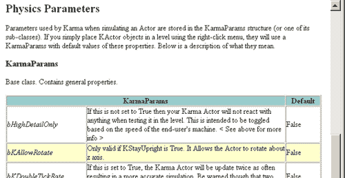
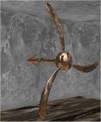

UDN
Search public documentation:
IntroToKarma
日本語訳
Interested in the Unreal Engine?
Visit the Unreal Technology site.
Looking for jobs and company info?
Check out the Epic games site.
Questions about support via UDN?
Contact the UDN Staff
Interested in the Unreal Engine?
Visit the Unreal Technology site.
Looking for jobs and company info?
Check out the Epic games site.
Questions about support via UDN?
Contact the UDN Staff
Introduction to Karma
Document Summary: A table of contents to the Karma documents. Document Changelog: Last updated by Jason Lentz (DemiurgeStudios?), for creation purposes. Original author was Jason Lentz (DemiurgeStudios?).Guide to the Karma Docs
This page briefly describes the contents and purpose of each of the Karma documents. If you aren't sure which document has what you're looking for, this document should help you narrow it down. Below is a list of links to the actual Karma docs described on this page:- KarmaReference
- ImportingKarmaActors
- UsingKarmaActors
- KarmaAuthoringTool (a.k.a. KAT)
- ExampleMapsKarmaColosseum
- RagdollsInUT2003
- KarmaExampleUT2003
Karma Reference
The KarmaReference document is a comprehensive guide to all of the features of KarmaActors including removing Karma Integration, activating Karma, explanations of each of the Karma Properties, explanations of KConstraint properties, and tips for debugging Karma and creating good simulations.
Importing Karma Actors
The ImportingKarmaActors document contains a ready made KarmaActor (both in .ASE and .MAX file formats) that you can download and import into your own build. The document also provides explanations on how to create your own Karma Actors using 3rd party modeling programs (such as 3DS Max).
Using Karma Actors
The UsingKarmaActors document contains an additional example KarmaActor (both in .ASE and .MAX file formats) that you can download and import into your own build. This document focuses more on how to set up KActors with constraints.
Karma Authoring Tool
The KarmaAuthoringTool document is an introduction to using KAT for setting up ragdoll physics in character models.
Ragdolls in UT2003
The RagdollsInUT2003 document briefly talks about how KAT was used to set up ragdoll physics for the characters in UT2003.
Karma Example Maps
The following documents are example maps that demonstrate how to use Karma in your levels.Karma Colosseum
In the ExampleMapsKarmaColosseum document, you will see how to create a variety of Karma Objects ranging from simple Karma primitives, to more complex objects made of multiple parts including KConstraints and destructible geometry.Karma Example UT2003
The KarmaExampleUT2003 document shows how Karma can be used to create a catapult, swinging door, and a rotating fan with dangling poles. While the map only works with UT2003, its principles should still hold true in a current build of Unreal.